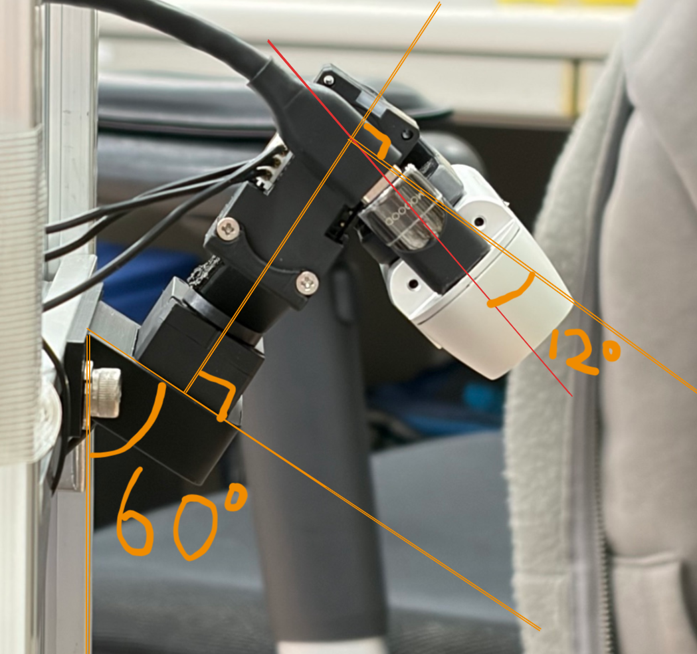
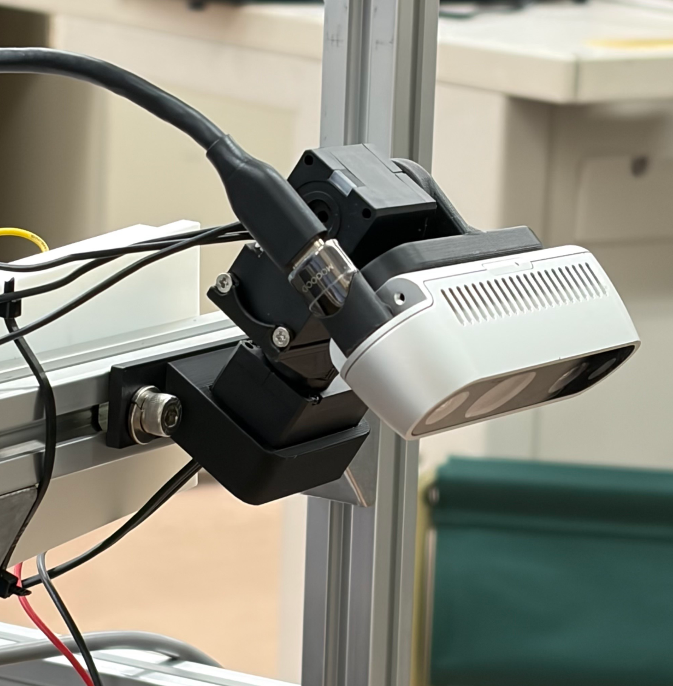
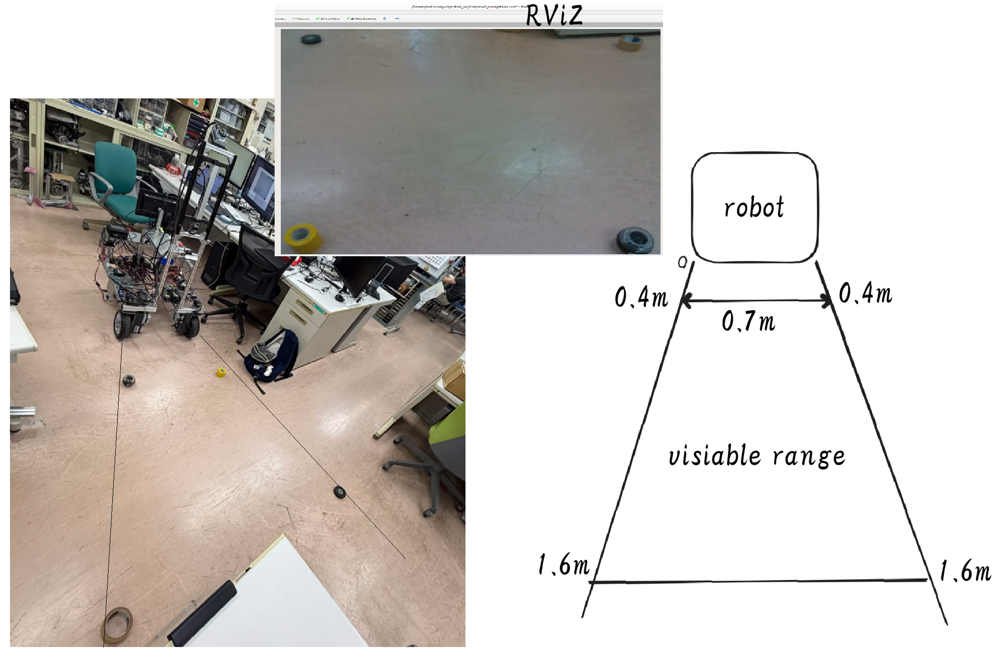
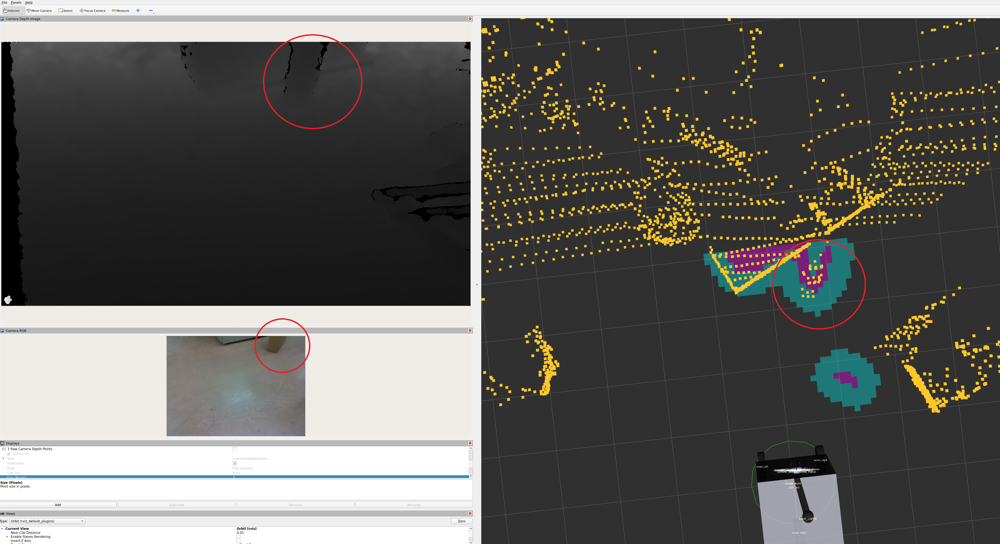
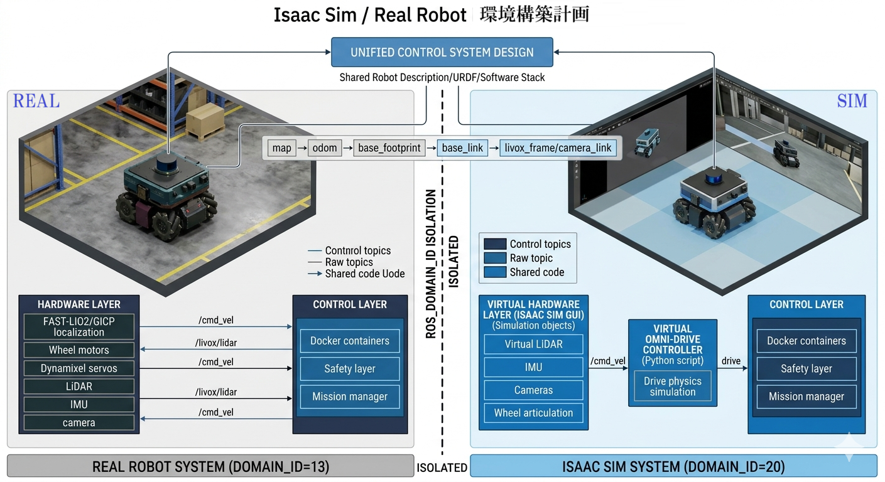

📌 前回の状態
Localization 実機確認済み（前週完了）
FAST-LIO2 + GICP による自己位置推定が実機で安定動作することを確認済み。
map → odom TF の継続出力を RViz にて確認。今週は Navigation 全体のソフトウェア実装・実機統合テストに進んだ。
✅ 今週の完了内容
Navigation ベースライン構築完了
完了
Navigation
実機で動作する Navigation の基盤が整った。以下のコンポーネントが統合済み。
📍FAST-LIO2 + GICP
自己位置推定
自己位置推定
📷RealSense depth
local costmap
local costmap
🎮Nav2 MPPI
メインコントローラ
メインコントローラ
🔁AUTO / MANUAL
Joy-Con 切替
Joy-Con 切替
🛡️cmd_vel 安全層
watchdog + 速度制限
watchdog + 速度制限
📋debug recorder
ログ記録
ログ記録
実機テスト結果（小目標ナビゲーション）
✅ Nav2 goal succeeded
✅ Controller reached goal
✅ Recoveries: 0
✅ ホロノミック横移動 確認
短距離ナビゲーション — RViz 記録
🎬 navigation.webm — 短距離ナビゲーションテスト（クリックで再生）
カメラホールダーの再設計・TF 調整
完了
Hardware
元のホールダーではカメラが近距離の地面を観察できなかったため、ホールダーを再設計した。
変更後、TF も新しいカメラ位置に合わせて更新。LiDAR と Camera の同一障害物に対する検出結果がほぼ一致することを RViz で確認した。

📷 新カメラホールダー

📷 新カメラホールダー2

📷 調整後の可視範囲

📷 LiDAR / Camera 検出一致
その他の完了項目
FAST-LIO2 / GICP の統合問題を解決。デフォルト起動は FAST-LIO mode に設定。
Livox
CustomMsg → PointCloud2 の変換チェーン完了。GICP / RViz / scan 側が正常利用可能。
Nav2 パラメータ・MPPI コントローラ設定完了。MPPI をメインコントローラとして運用。
RealSense depth pointcloud を local costmap に接続。局所障害物検出が有効。
Joy-Con による AUTO / MANUAL モード切替・緊急停止・goal cancel を実装済み。
📊 現在の進捗評価
Step 7 Navigation — 実機 baseline 確立
Navigation は実機で使用可能な baseline に到達した。短距離目標への自律移動を確認済みで、
現在は繰り返しテスト・長距離テスト・障害物応答の検証フェーズに入ることができる状態。
パラメータの細部調整は後続フェーズで継続する。
📋 Todo リストで詳細を確認
🔜 次のステップ
Navigation 継続テスト
中距離 Navigation goal の繰り返しテスト（2〜3 回）
制御された環境での障害物回避テスト
安定確認後、Phase 4：Mission Manager / waypoint workflow へ移行
Isaac Sim シミュレーション環境構築計画（次フェーズ）
Navigation が実機で動作したことで、Isaac Sim シミュレーション環境の構築を並行して開始する。
シミュレーション環境では 実機とまったく同じ制御システム を使い、ROS_DOMAIN_ID による隔離（実機=13、Sim=20）で安全に運用する。
これにより、Mission Manager や AI Planner の先行テストが仮想環境で行えるようになる。

📷 Sim/Real 開発比較図
Phase 0
パッケージ準備 — robot_sim パッケージ骨格作成、URDF 展開確認、Isaac Sim PC に ROS2 環境整備
Phase 1
Joy-Con 手動走行 — URDF → USD インポート、全向底盤逆運動学スクリプト接続、実機と同じ操作系で Sim ロボットを移動
Phase 2
Sim 環境マップ作成 — Joy-Con 手動走行で Sim 環境を一周し、Nav2 用 2D map を生成
Phase 3〜4
Localization + Nav2 — 実機と同じ FAST-LIO2 + GICP および Nav2 MPPI を Sim 上で動作確認
Phase 5+
Docker 化・タスク等価 — 制御システムをコンテナ化し、Mission Manager / AI Planner の仮想テストへ